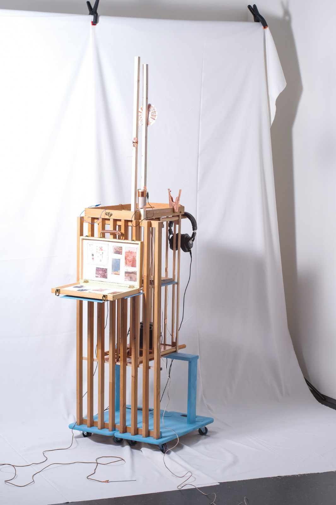
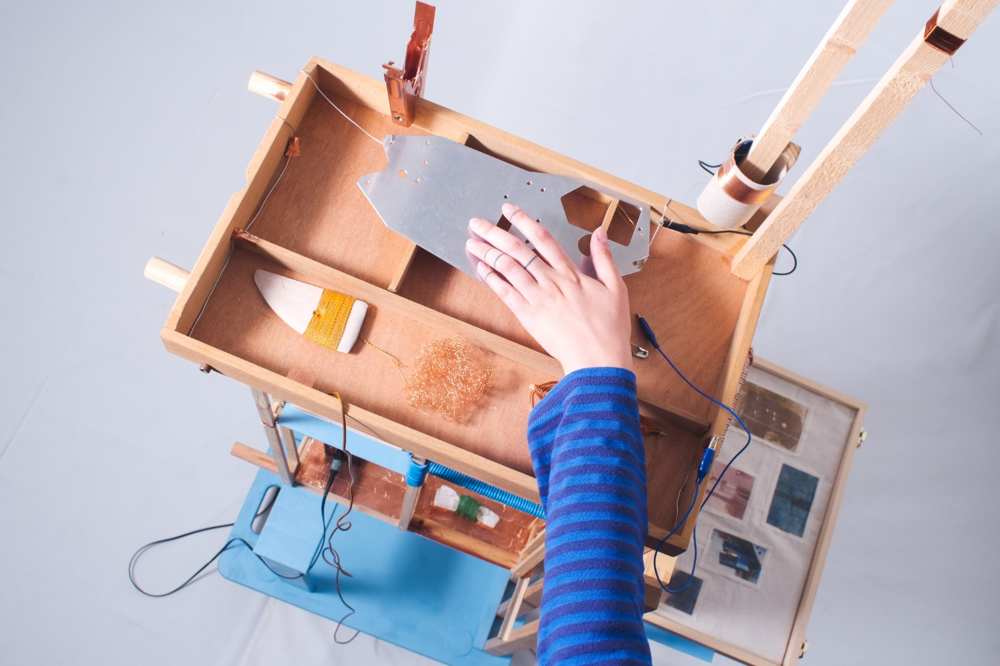
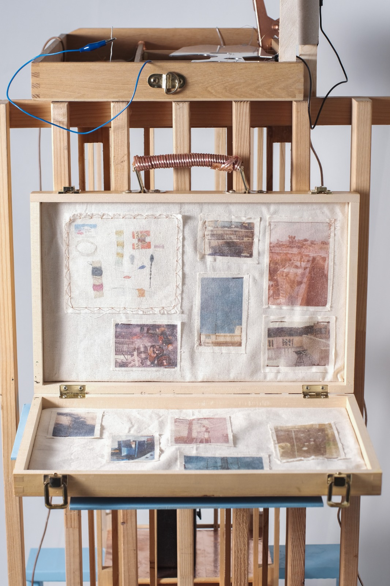
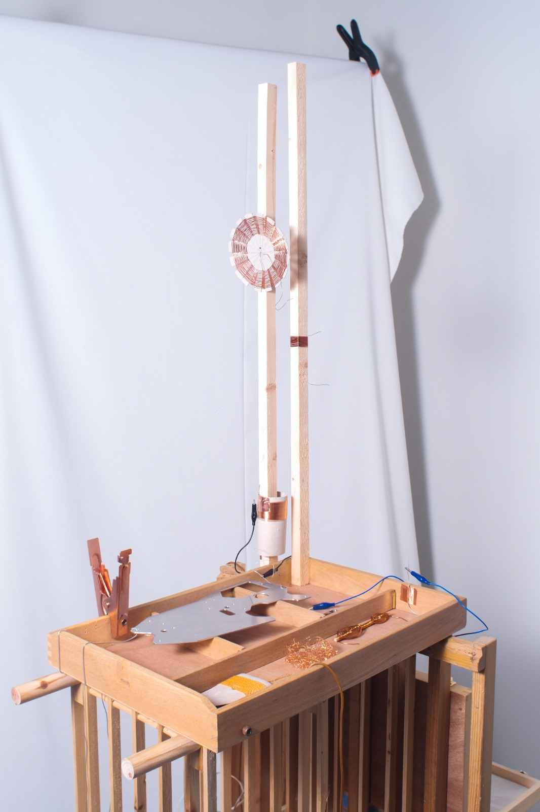
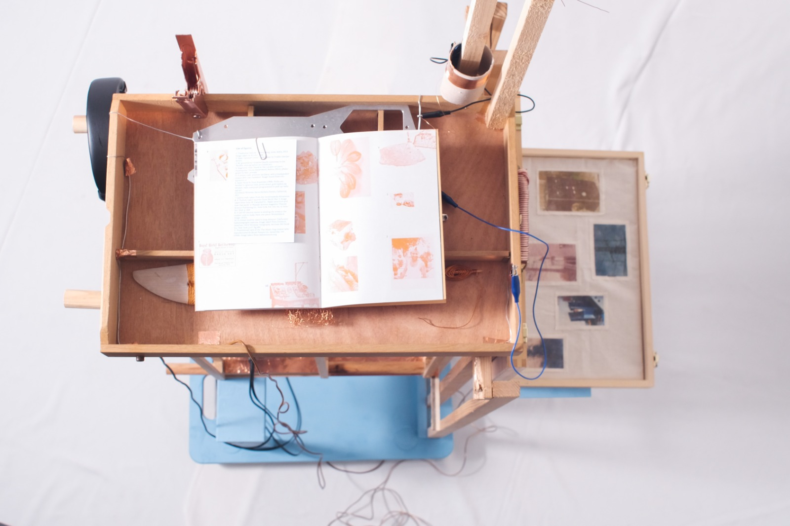
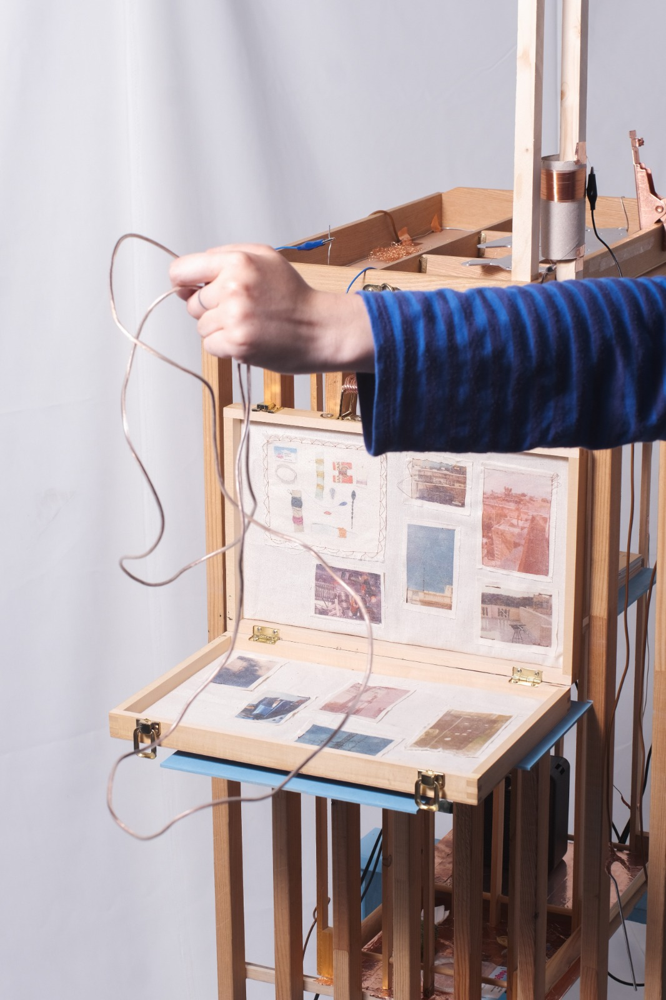
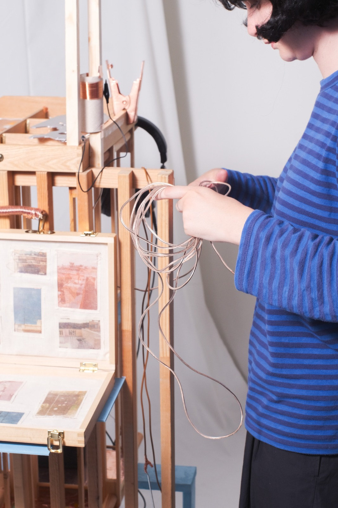
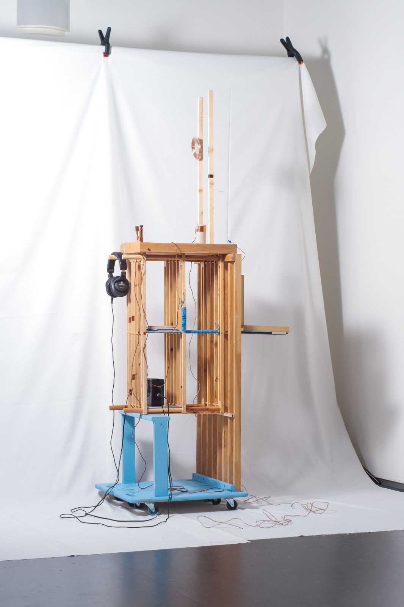
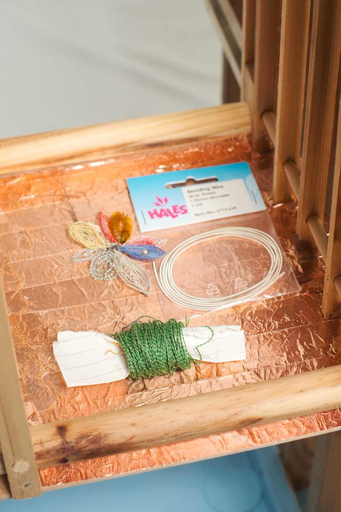

2026
Masters in Experimental Publishing (Piet Zwart Institute) Graduation project.
A Familiar Materiality is a project which explores the merging of the material worlds of traditional craft and communication technology, specifically DIY radio wave receivers. By applying familiar handicraft techniques to the making of radio receivers, the project investigates how the function and perception of these objects alter through the materials used in their construction.
"Growing up alongside my family’s contrasting hobbies of textile work and radio-making, I developed a familiarity with both practices. Through a series of prototype receivers, the project brings these worlds together, with each object intertwining its own narrative through the materials and techniques it draws upon."